Major Cities and Urban Centers
Ranchi
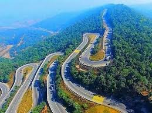
- Dassam Falls: Majestic waterfall near Ranchi.
- Hundru Falls: One of the highest waterfalls in Jharkhand.
- Jonha Falls: Also known as Gautamdhara Falls.
- Rock Garden: Beautiful garden with rock formations and sculptures.
- Tagore Hill: A scenic spot with a view of Ranchi city.
- Pahari Mandir: Temple dedicated to Lord Shiva.
- Ranchi Lake: Popular for boating and leisure activities.
- Birsa Zoological Park: A zoo with a variety of wildlife species.
Jamshedpur
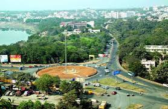
- Jubilee Park: A well-maintained park with gardens and walking paths.
- Tata Steel Zoological Park: Zoo with a range of animal species.
- Dimna Lake: An artificial lake popular for picnics and boating.
- Dalma Wildlife Sanctuary: Sanctuary known for its elephant population and diverse flora and fauna.
- Russi Modi Centre of Excellence: A center showcasing Tata Steel's history and achievements.
Dhanbad
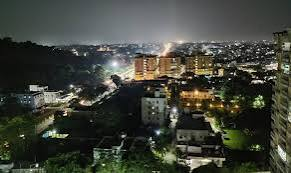
- Maithon Dam: A multipurpose dam located on the Barakar River.
- Panchet Dam: A dam located on the Damodar River.
- Birsa Munda Park: A park dedicated to the tribal hero Birsa Munda.
- Topchanchi Lake: A lake surrounded by scenic beauty.
Bokaro
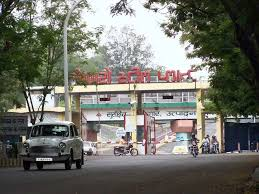
- Bokaro Steel Plant: Major steel plant in Bokaro.
- Bokaro Steel City Park: A park with recreational facilities.
- City Park: A popular park in the heart of Bokaro.
- Jawaharlal Nehru Biological Park: A park with a variety of flora and fauna.
Waterfalls and Natural Attractions
Hundru Falls
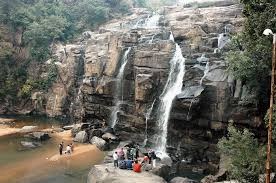
- Hundru Falls: One of the highest waterfalls in Jharkhand.
Lodh Falls
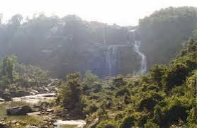
- Lodh Falls: Highest waterfall in Jharkhand, located in Latehar district.
Panchghagh Falls
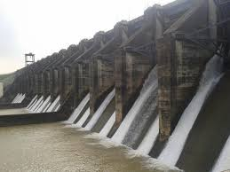
- Panchghagh Falls: Scenic waterfall formed by five streams.
Wildlife Sanctuaries and National Parks
Betla National Park
.jpg)
- Betla National Park: Known for tigers, elephants, and rich wildlife.
Dalma Wildlife Sanctuary
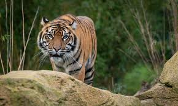
- Dalma Wildlife Sanctuary: Known for its elephant population and rich biodiversity.
Hazaribagh Wildlife Sanctuary
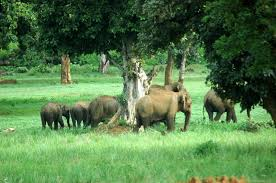
- Hazaribagh Wildlife Sanctuary: Known for diverse flora and fauna.
Palamau Tiger Reserve
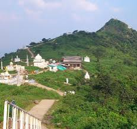
- Palamau Tiger Reserve: One of the first nine tiger reserves of India.
Pilgrimage and Religious Sites
Deoghar
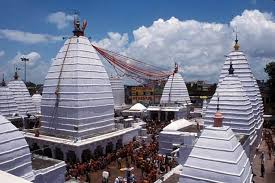
- Baba Baidyanath Temple: One of the twelve Jyotirlingas.
- Satsang Ashram: Spiritual and cultural center.
Ranchi
- Pahari Mandir: Temple dedicated to Lord Shiva.
- Jagannath Temple: Important temple dedicated to Lord Jagannath.
Historical and Archaeological Sites
Maluti Temples
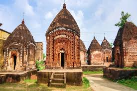
- Maluti Temples: Group of terracotta temples in Dumka district.
Lakes and Dams
Maithon Dam
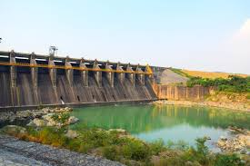
- Maithon Dam: Multipurpose dam located on the Barakar River.
Dimna Lake
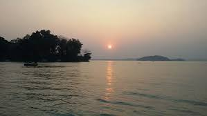
- Dimna Lake: Artificial reservoir popular for picnics and boating.
Khandoli Dam
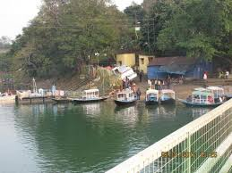
- Khandoli Dam: Popular spot for picnics and water sports.
Adventure and Eco-Tourism
Netarhat
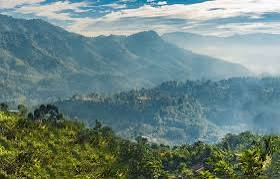
- Netarhat: Hill station known for scenic beauty and sunrise/sunset views.
Patratu Valley
- Patratu Valley: Scenic valley with beautiful landscapes and a dam.
Cultural and Tribal Attractions
Tribal Research Institute and Museum
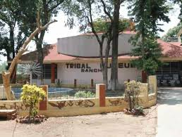
- Tribal Research Institute and Museum: Showcases the culture and heritage of the tribes of Jharkhand.
Hazaribagh
- Konar Dam and Hazaribagh Lake: Scenic spots for relaxation and nature views.
Other Notable Attractions
Ghatshila
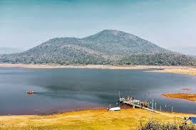
- Ghatshila: Famous for natural beauty and historical significance.
Sanskritik Vihar
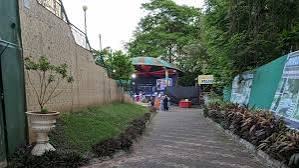
- Sanskritik Vihar: Cultural complex showcasing Jharkhand's culture and heritage.